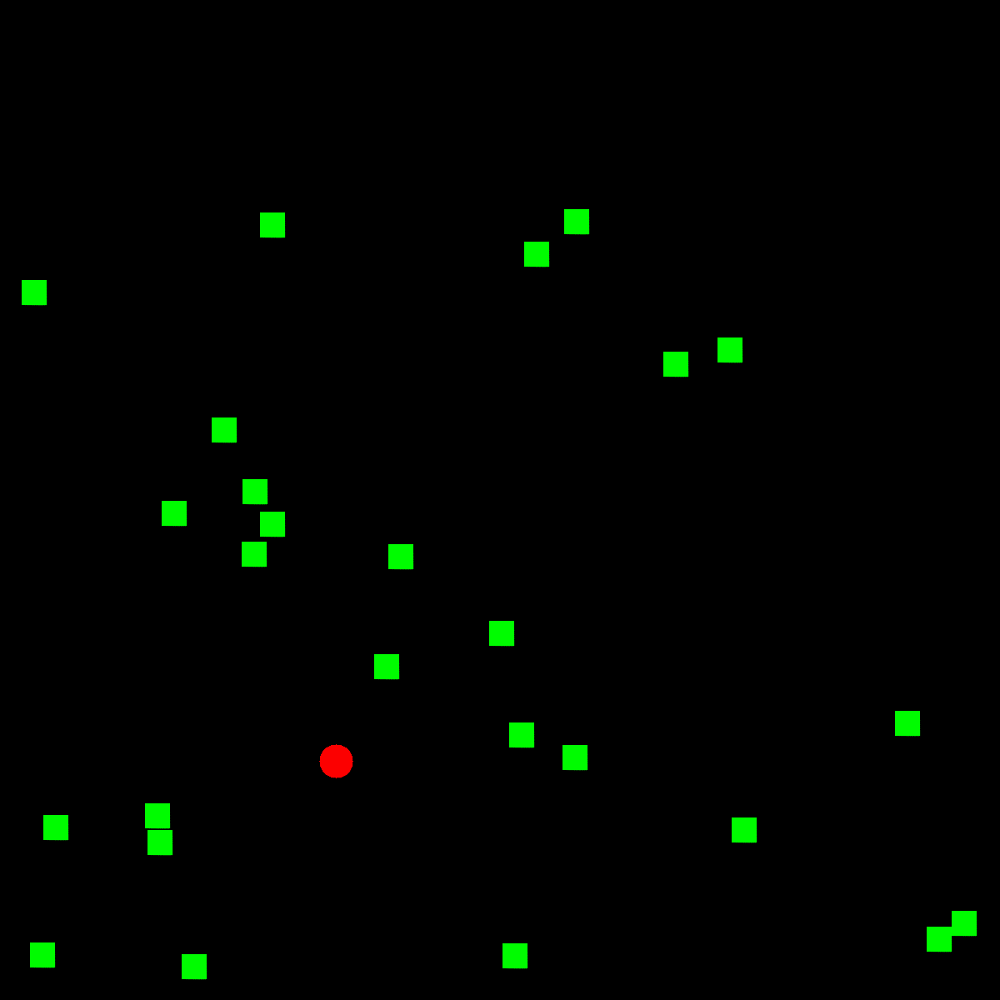

The Complete Guide to Model-based Reinforcement Learning

For any physically-intelligent mobile robot that operates autonomously in the real world, successful navigation is a critical capability. This requirement of the topic is also highly relevant across various sectors, including logistics, autonomous driving, and search-and-rescue applications. Furthermore, advanced robotic tasks, such as object manipulation, often depend on the foundational stability provided by accurate navigation. While the specific solution approach must adapt to environmental parameters (such as indoor/outdoor or known/unknown maps), all effective systems fundamentally rely on robust path planning. Based upon the foundational concepts of robotics, such as planning methods (Bug1 and Bug2), this guide provides a comprehensive, yet accessible, depiction of mobile robotics with a demonstrated 2D example. Using the popular ROS2 framework and C++, we will explore the core ideas needed to manage basic wheeled robot navigation in a simulated 2D environment to reach a goal while avoiding obstacles, explaining the theory as well as the code.